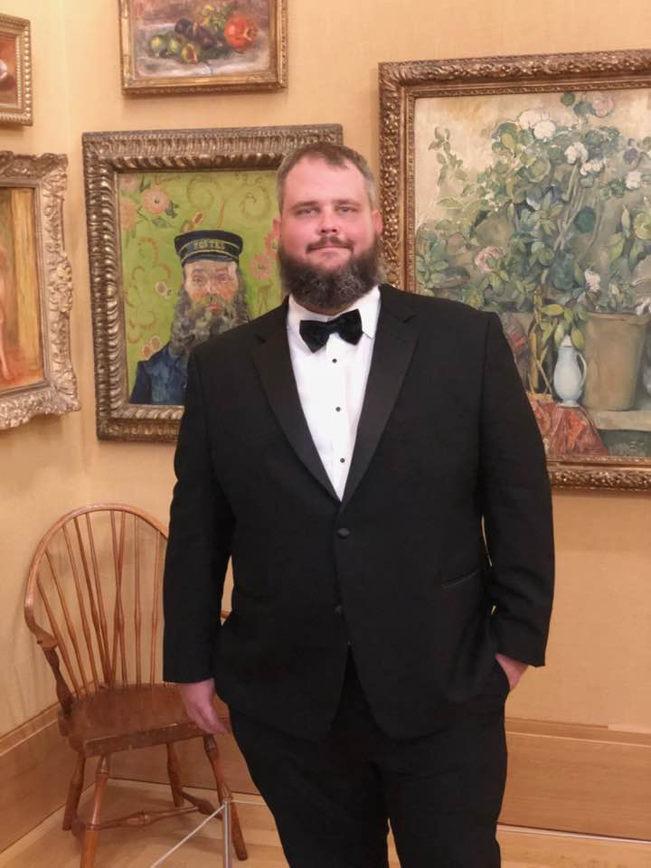

About Me

Hello, my name is Sam Croce and I live in Cherry Hill NJ. I am presently an audio engineer looking for a more stable career. Now finished with the University of Pennsyvania's bootcamp I am hoping to make a move into web develpment. Some of my hobbies include reading, playing the drums, and golfing, I am also in a band called 'Amy and the Astronauts'. We have played together for the last three years. We play the music you love to hear and frequent bars and clubs around South Jersey, Philadelphia, and the Jersey Shore.
Being a Full Stack Web Developer, I'm looking forward to moving into a new career with a solid knowledge base behind me. I have big plans for the future and am hoping to execute all that I have laid out. Through hard work, determination, and study, I am ready to embark on this new journey.